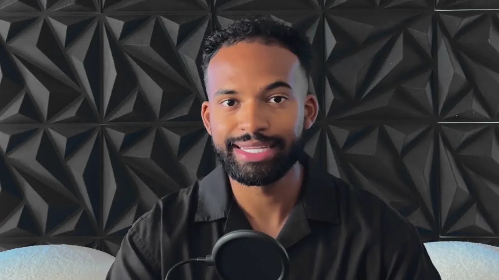
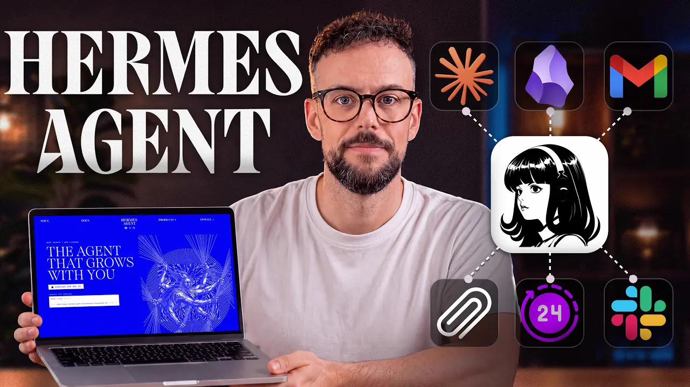

CRAFTING STORIES IN MOTION
A freelance video editor & motion designer shaping brands, films, and campaigns through rhythm, emotion, and cinematic craft.

OpenClaw usage

VSL Medical

Clint Coons video

7 INSANE Use Cases For Hermes Agent
Flow State
Golden Hour
Fast Cuts
The Drop
Services
From raw footage to final master — a complete post-production craft under one roof.
Video Editing
Narrative-first editing that finds the story in the footage — controlling pace, emotion, and flow so every cut lands.
Motion Graphics
Titles, animated graphics, and brand motion that add polish and personality without ever distracting from the story.
Color Grading
Cinematic color that sets the mood — from clean primary grades to bold, stylized looks and consistent LUTs.
Post Production
The full finishing pipeline — sound design, compositing, and delivery in every format your platforms demand.
The Process
A clear, collaborative flow from first call to final delivery.
Discovery
We start by listening — understanding your goals, audience, and the story you want to tell.
Edit
Footage becomes narrative. I shape the first cut, finding rhythm, structure, and emotion.
Refine
Together we sharpen it — feedback rounds on pacing, motion, sound, and color until it sings.
Deliver
Final master exported in every format you need, optimized for each platform and screen.
Kind Words
Honest impressions from the teams and creators I've worked with.
“Took our raw footage and turned it into something we genuinely couldn't stop watching. The pacing was perfect.”
“The color grade and motion work elevated our brand film beyond what we imagined. Calm, precise, reliable.”
“Fast, thoughtful, and creative. Delivered a campaign edit that outperformed everything we'd done before.”

The editor behind the cuts.
I'm a freelance video editor & motion designer with 6 years turning footage into stories that move people.
I work closely with brands, agencies, and creators — shaping each project with intention and care. Every frame is chosen for a reason: the right pace, the right sound, the right light.
Based online, working globally. If you're looking for edits that feel considered, cinematic, and built to last beyond trends — let's talk.
Let's make something cinematic.
Have a project in mind? Grab a slot that suits you — 30 minutes, no obligation.